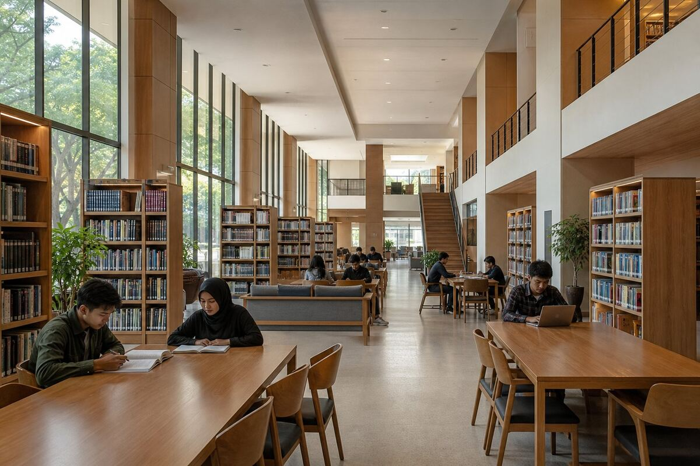

Pusat belajar
Perpustakaan Pusat
Perpustakaan modern dengan ribuan koleksi buku cetak dan digital (e-journal), serta ruang baca ber-AC.
Selain koleksi cetak, mahasiswa memperoleh akses ke jurnal elektronik dan repositori tugas akhir. Tersedia ruang baca hening, area diskusi kelompok, dan layanan bimbingan penelusuran literatur.
- Ruang baca ber-AC
- Akses e-journal
- Area diskusi kelompok